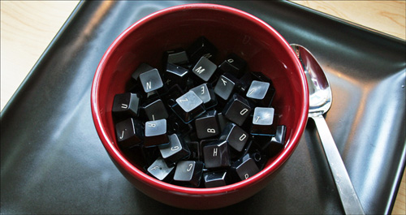

Strategien gegen die "Post-Lunch Fatigue"

Wer einem Ganztagsbürojob nachgeht, wird das sicherlich kennen - in der Mittagspause schlägt man sich den Bauch voll, um danach fast am Schreibtisch einzuschlafen und seine Kollegen/innen durch lautes, ausdauerndes Gähnen zu unterhalten. Diese, auf das Essen folgende Müdigkeit, welche im Denglischen als "Post-Lunch Fatigue" bezeichnet wird (behaupte ich!), rührt daher, dass das Blut im Bauch zur Verdauung gebraucht wird, um das Gedärm mit Sauerstoff zu versorgen.
Und da Ressourcen, wie wir wissen, endlich sind, wird schnell klar, dass das Hirn bei dieser Blutumverteilung den Kürzeren zieht. Zombie-gleich hängen wir also vor dem Bildschirm, hacken lustlos auf der Tastatur rum und würden am liebsten anfangen zu grunzen und den Kopf auf die Tischplatte zu schlagen, bzw. anderen intellektuell ebenbürtigen Tätigkeiten nachzugehen.
Jedoch wird man (noch) nicht fürs Verdauen, Dösen und Sabbern bezahlt, weshalb man der "Post-Lunch Fatigue" entschieden entgegentreten muss. 5 wirksame Strategien werde ich im folgenden aufführen und kritisch bewerten:
1. Kaffee/koffeinhaltige Mode-Heißgetränke
Sicher der Klassiker unter den Wachmachern. Blöderweise lässt die Wirkung etwas nach, wenn man sich schon am Vormittag zwei Liter hinter die Binde kippt und in diesem Rhythmus auch nach dem Mittagessen weitermacht.Tee- und Limo-Trinker sollten es allerdings auf einen Versuch ankommen lassen. Aber Obacht: Wer sich nicht in jahrelanger Arbeit innerlich mit Kaffee durchgegerbt hat, kann mitunter sensibel auf dieses Getränk reagieren.
Auf deutsch: Die Schläuche kommen in Wallung und man verbringt die meiste Zeit des Nachmittags abseits des Schreibtisches auf dem Lokus. Das sorgt schnell für Verdruss.
2. Kokain
Dieser, in Kennerkreisen auch "Fickpuder" genannte Wachmacher zählt zu den harten Drogen, ist illegal, teuer in der Beschaffung und schädigt u.a. die Nasenscheidewände. Ansonsten scheint nach dem, was ich bislang gehört habe, Kokain zur Antreibssteigerung durchaus zu gebrauchen zu sein.
Allerdings wächst das Ego mit der Einnahme ganz rapide. Als Prakitkant, wie ich einer bin, sollte man also die Finger davon lassen. Abgesehen davon, dass es relativ unerschwinglich ist, macht es sich einfach schlecht, wenn man sich im täglichen Meeting aufführt, als würde einem der Laden gehören. Besonders wenn der/die Chef/in mit am Tisch sitzt, kann das zu Verwirrungen führen. Als Praktikant hat man einfach demütiger aufzutreten.
3. Einen Spaziergang machen
Auf jeden Fall die gesündeste Alternative. Man bekommt frische Luft, Bewegung, einen freien Kopf und Licht. Folglich kann man Vitamin D in rauen Mengen produzieren. Wer hat sich das nicht schon immer gewünscht?! Allerdings gibt es da einen Haken: Die durchschnittliche Mittagspause dauert eine Stunde. Zu wenig um zu essen, im Netz zu surfen und einen ausgiebigen Spaziergang zu machen.
Reinste LOHAS-Romantik also und absolut unrealistisch.
4. Sudokus lösen
Man gibt sich zum Ausgleich dem Gehirnjogging hin. So kann man entspannen und hält seinen Denkmuskel auch die Pause über am laufen, um hernach wieder voll in die Arbeit einsteigen zu können.
Eine absolute Milchmädchenrechnung. Ich glaube eigentlich nicht, dass jemand auf dieser Welt so entrückt sein kann, dass er oder sie seine/ihre Mittagspause mit Sodokus verbringt. Allerdings glaubt man auch nicht, dass Menschen so weich im Kopf sind, sich 100 Hot Dogs am Stück reinzudrücken. Deshalb wird auch diese Alternative kritisch gewürdigt:
Das Blut gehört nach dem Essen in den Bauch. Wer versucht es durch Gehirnjogging dort abzuziehen, wird über kurz oder lang schmerzhafte Verstopfungen und brennende Magengeschwüre bekommen. Verdientermaßen zwar, aber doch auf Kosten des allgemeinen Gesundheitssystem. Ergo: Nach dem Essen hat das Bregen Auszeit.
5. Dösen und Sabbern
In der modernen Leistungsgesellschaft nicht gern gesehen, aber nichtsdestotrotz die beste Tätigkeit nach einem opulenten Mahl. Zwar wird diese Form der Essensnachbereitung die Mittagspause sprengen, doch die Zeit ist gut investiert: Schließlich kann man danach mit voller Kraft weitermachen und schnell das aufholen, was die Kollegen/innen ohne adäquate Verauungszeit geschafft haben. Überdies vermeidet man eine Menge Fehler und spart so auch noch viel Arbeit.
Fazit:
Es ist schwierig zu sagen, ob nun ein Spaziergang oder profanes Dösen und Sabbern die bessere Alternative ist. Fakt ist jedoch, dass - solange man aufs Sabbern verzichtet - das Dösen als Arbeit verkauft werden kann. Das ist bei einem Spaziergang schon schwieriger, es sei denn, man ist Handelsvertreter/in o.ä. Deshalb rate ich: Nach dem Essen dösen und vorsichtig Arbeit vortäuschen. So kann man die sauerstofftechnische Talsohle im Kopf locker überwinden und danach wieder voll aufdrehen.
PS: Man könnte einwerfen, dass ich die Alternative "Wenig/gar nichts essen" übergangen habe. Dazu die kurze Bemerkung: Das ist keine Alternative!
Alphabet Soup II von cdw9 unter CC-Lizenz


4 Kommentare zu "Strategien gegen die "Post-Lunch Fatigue""
- Externe Links im selben Fenster öffnen
- Externe Links in neuem Fenster öffnen
magnus
bei einer halbe stunde mittagspause habe ich folgendes modell erfolgreich getestet: 10 minuten power-spachteln in der kantine(mittlere bis große portion); 20 minuten power-napping; danach 2,5 stunden power-prokrastinieren.
=)
jksimpson
1 Stunde Mittagspause? Ich dachte, die habe nur ich...
Rick
Und was macht man bei Chronischer stabiler Post-Lunch-Fatigue (sprich wenn man sich eigentlich dauernd wie nach dem Essen fühlt, selbst wenn man keine Mahlzeit hatte)?
christoph
hier in der agentur ist es auch jeden tag das selbe. jeden tag kämpfe ich erneut gg. die müdigkeit nach dem essen. dazu gesselen sich dann manchmal noch krämpfe weil die ente süß sauer oder die pizza häufig als frühstück gilt.
was wirklich hilft ist fit zu sein, zu frühstücken und dann auf dem weg zur arbeit zu verdauen um dann in der pause nicht auf eine ente süß sauer oder ähnlichliches zurückgreifen zu müssen um seinen bäääärenhunger zu stillen.
leider bin ich nicht sonderlich diszipliniert was sowas angeht noch dazu absoluter morgenmuffel...
fazit:
"Post-Lunch Fatigue" wir mich mein ganzes lebenlang begleiten...